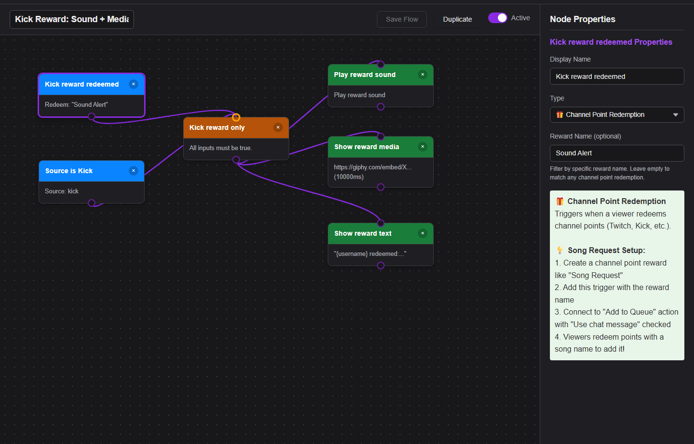

What Event Flow Is For
Event Flow is the advanced automation editor. Use it when popup toggles are not enough: filter chat, trigger media, relay messages, call webhooks, or control OBS.

Before Any Recipe
- Use one test platform and one Social Stream session.
- Open the dock and confirm chat arrives.
- Open
actions.html?session=YOUR_SESSIONif the recipe plays audio, media, or controls OBS. - Test with a fake message or a safe trigger before going live.
- Export a working flow before making a large edit.
Recipe Ideas
| Recipe | Trigger | Action |
|---|---|---|
| Keyword sound | Message contains !hype | Play audio clip in actions.html. |
| Kick reward media | Reward/channel point event | Show an image, video, or sound. |
| First-time chatter | First-time chatter flag or filter | Feature the message or show a welcome overlay. |
| Donation alert | hasDonation or donation event | Send to alert overlay, webhook, or OBS scene action. |
| Webhook relay | Platform/type filter | POST a selected payload to your service. |
| Random sound pick | Keyword + RANDOM gate | Play one of two clips at random — see micro-flow D in the editor guide. |
Kick Reward Media Example
This is the most common practical Event Flow pattern: match a reward, then play media through Flow Actions.


Full deep dive: Kick rewards sounds/media guide.
Common Fixes
- Nothing happens: confirm the source event arrives in the dock first.
- Audio or media does not play: keep
actions.htmlopen with the same session, then check the Event Flow media hosting guide. - OBS action fails: check OBS WebSocket v5, port
4455, password, and permissions. - Flow fires too often: add a stricter platform, event, keyword, or user filter.
Full reference: Event Flow Editor Guide.